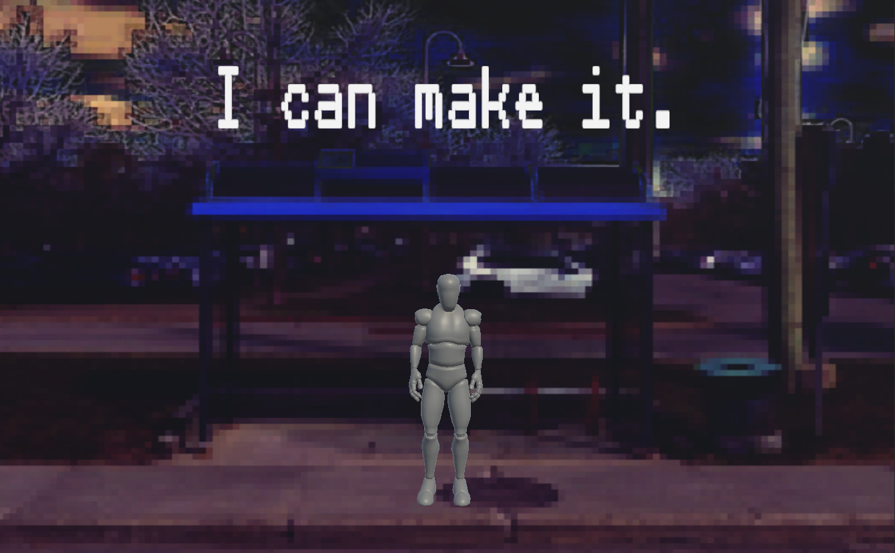
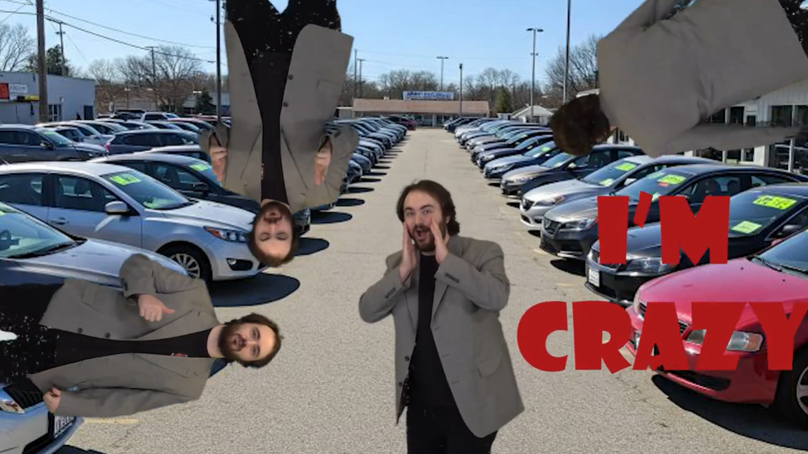
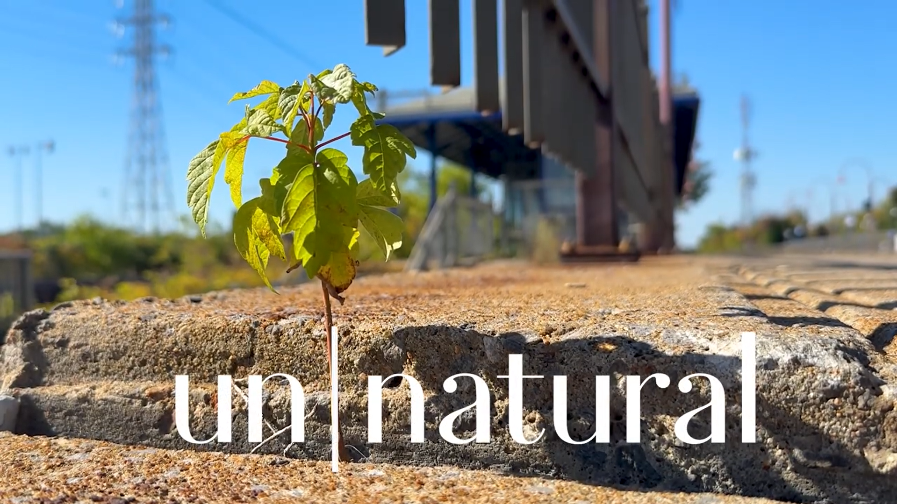
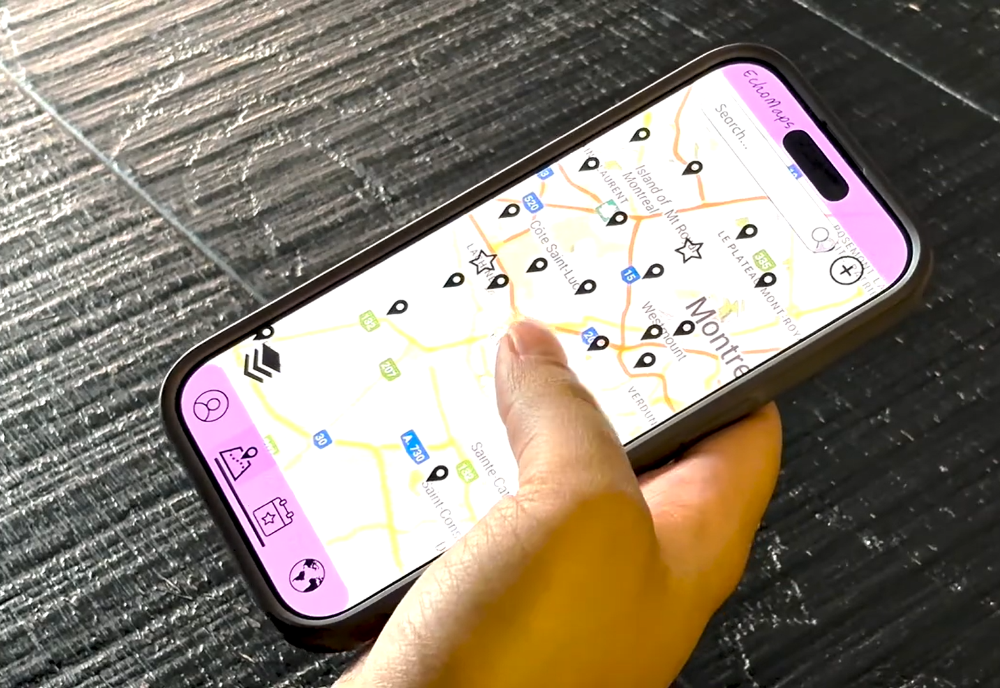
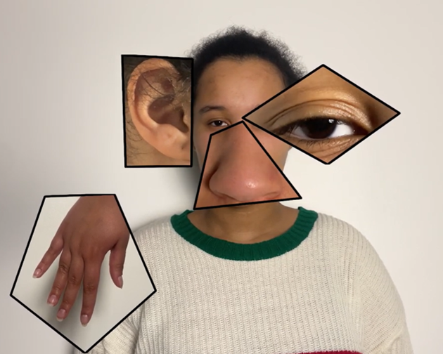
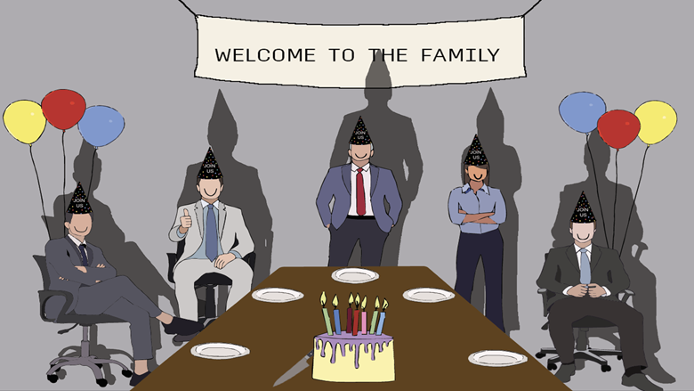

Partial Perception
An installation about how inference shapes perception, using partial sensor data to examine how generative AI constructs its own version of reality.
- Generative AI
- Python
- Electronics
Work Archive
Featured works lead with more visual weight, followed by a broader archive of videos, games, prototypes, and image-based studies.
Start with the highlighted projects below, then move through the full archive for experiments, prototypes, and process-heavy work.
Featured Projects
An installation about how inference shapes perception, using partial sensor data to examine how generative AI constructs its own version of reality.

A short film about a man slipping into an inward journey while being followed by himself.

A web application where users enter a dream, receive a Lynchian image of it, and get a symbolic analysis grounded in Jungian psychology.
Archive List
A short game about sprinting for the bus before it leaves. Move fast, dodge obstacles, and maybe make it on time.

A green-screen video styled like an 80s car commercial.

A looping anti-Christmas card animation made in Blender.

A short video about nature appearing in constructed places and being pushed into unnatural forms.

A prototype phone application about reconnecting with culture and identity, presented through an iPhone wireframe and video prototype.

A short video game in the style of whack-a-mole, based on Hercules' labour of the golden apples.

An experimental video about the collision of senses across a day in the city, meant to capture the feeling of being overwhelmed.

A short experimental food video about making a sandwich with sentient ingredients.

A poster series about work-family culture and the pressure of workplace loyalty.
